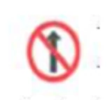
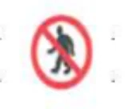
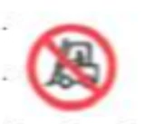
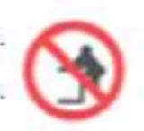
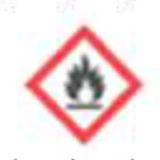
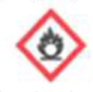
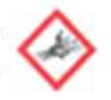
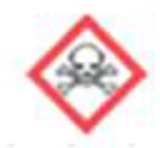
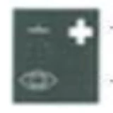

특별한국어능력시험문제(금속·금속제품 제조업)
Q. 1. 다음 중 비철금속 원소가 아닌 것은?
① Mg
② Al
③ Fe
④ Cu
Right Ans:- ③ Fe
Q. 2. 다음 중 철강 재료가 아닌 것은?
① 순철
② 탄소강
③ 주철
④ 티타늄합금
Right Ans:- ④ 티타늄합금
Q. 3. 금속의 특성에 대한 설명 중 올바른 것은?
① 열과 전기의 부도체이다.
② 금속적 무광택성을 가지고 있다.
③ 상온에서 고체이다.
④ 액체 상태에서 결정구조를 가지고 있다.
Right Ans:- ③ 상온에서 고체이다.
Q. 4. 금속재료의 물리적 특성에 해당하는 것은?
① 비중
② 경도
③ 자성
④ 부식성
Right Ans:- ① 비중
Q. 5. 다음 중 금속의 결정구조가 아닌 것은?
① 조밀입방격자
② 조밀육방격자
③ 체심입방격자
④ 면심입방격자
Right Ans:- ① 조밀입방격자
Q. 6. 인장과 압축응력을 오랜 시간에 걸쳐 연속적으로 반복 작용시켜서 일어나는 파단 현상은?
① 강도
② 경도
③ 인성
④ 피로
Right Ans:- ④ 피로
Q. 7. 강의 변태에서 ⍺고용체의 금속 조직학상 용어는?
① 페라이트(ferrite)
② 오스테나이트(austenite)
③ 펄라이트(pearlite)
④ 시멘타이트(cementite)
Right Ans:- ① 페라이트(ferrite)
Q. 8. 다음 중 고상변태(고체에서 고상으로 변화)가 아닌 것은?
① 공정
② 공석
③ 포석
④ 편석
Right Ans:- ① 공정
Q. 9. 2종 이상의 금속원소가 간단한 원자비로 결합되어 본래의 성분 금속과는 다른 성질을 가지는 독립된 결정격자를 형성하는데, 이것은?
① 고용체합금
② 금속간화합물
③ 포정합금
④ 한율고용체
Right Ans:- ② 금속간화합물
Q. 10. 금속의 강화기구 중 제2상이 분말야금이나 내부산화법에 의해 형성되는 강화현상은?
① 고용체강화
② 석출강화
③ 분산강화
④ 입자미세화강화
Right Ans:- ③ 분산강화
Q. 11. 금속의 소성변형을 응용한 소성가공법이 아닌 것은?
① 압연가공
② 단조가공
③ 프레스가공
④ 주조가공
Right Ans:- ④ 주조가공
Q. 12. 금속의 소성가공은 열간가공과 냉간가공으로 나누는데, 그 기준점은?
① 재결정온도
② 용융온도
③ 탄성변형온도
④ 응고온도
Right Ans:- ① 재결정온도
Q. 13. 다음 중 경금속으로만 나열된 것은?
① Al, V
② Cr, Zn
③ Fe, Mg
④ Al, Mg
Right Ans:-④ Al, Mg
Q. 14. 다음 중 인장강도 시험을 통해서 알 수 있는 것은?
① 연신율
② 경도
③ 용융점
④ 열전도도
Right Ans:- ① 연신율
Q. 15. Fe-C평형상태도에서 강과 주철을 구분하는 탄소함유량은?
① 4.3%
② 2.0%
③ 0.8%
④ 0.025%
Right Ans:- ② 2.0%
Q. 16. 다음 조직 중 탄소함유량이 가장 많은 조직은?
① 시멘타이트(cementite)
② 오스테나이트(austenite)
③ 펄라이트(pearlite)
④ 페라이트(ferrite)
Right Ans:- ① 시멘타이트(cementite)
v
Q. 17. 탄소강 중의 5대 원소가 아닌 것은?
① Al
② Si
③ Mn
④ P
Right Ans:- ① Al
Q. 18. 탄소강의 열처리에서 담금질을 하는 목적은?
① 조직의 표준화
② 내부 응력의 제거
③ 경도 향상
④ 탈탄 촉진
Right Ans:- ③ 경도 향상
Q. 19. 다음 중 합금공구강의 용도가 아닌 것은?
① 내식용
② 절삭용
③ 내충격용
④ 열간가공용
Right Ans:- ① 내식용
v
v
Q. 20. Cr을 다량 첨가하여 내식성을 현저하게 향상시킨 강은?
① 구조용 특수강
② 공구용 합금강
③ 스테인레스강
④ 고속도 공구강
Right Ans:- ③ 스테인레스강
Q. 21. 백주철의 조직으로 맞는 것은?
① 펼라이트+시멘타이트
② 펼라이트+시멘타이트+흑연
③ 펄라이트+흑연
④ 펄라이트+페라이트+흑연
Right Ans:- ① 펼라이트+시멘타이트
Q. 22. 합금주철의 종류로서 부적당한 것은?
① 칠드주철
② 내마모성주철
③ 기계구조용 합금주철
④ 내열 및 내산주철
Right Ans:- ① 칠드주철
Q. 23. 주철의 주조성을 좌우하는 인자가 아닌 것은?
① 용탕의 산화도
② 유동성
③ 수축률
④ 흑연화
Right Ans:- ④ 흑연화
Q. 24. 황동(brass)의 합금성분은?
① Cu+Zn
② Cu+Sn
③ Cu+Ni
④ Cu+Fe
Right Ans:- ① Cu+Zn
Q. 25. 황동 또는 청동에 비해 강도, 경도, 내마모성 등의 기계적 성질 및 내열성, 내식성이 우수하여 화학공업용 기기, 항공기, 자동차 등의 부품으로 적당한 재료는?
① 알루미늄청동
② 인청동
③ 연청동
④ 규소청동
Right Ans:- ① 알루미늄청동
Q. 26. 다음 알루미늄 합금 중 시효경화형 합금은?
① Al-Si
② Al-Cu
③ Al-Mn
④ Al-Mg
Right Ans:- ② Al-Cu
v
Q. 27. 알루미늄 합금에서 과포화 고용체를 만드는 용체화 처리 온도는 몇 도인가?
① 100℃
② 300℃
③ 500℃
④ 700℃
Right Ans:- ③ 500℃
Q. 28. 미국 AA(Aluminum and Aluminum alloy)에서 분류한 가공용 알루미늄 합금의 식별부호 중 5000계열은?
① Al-Cu계 합금
② Al-Mn계 합금
③ Al-Si계 합금
④ Al-Mg계 합금
Right Ans:- ④ Al-Mg계 합금
Q. 29. 니켈의 실용합금인 인바(invar), 엘린바(elinvar), 니켈로이(nickalloy) 등의 합금성분은?
① Ni-Fe 합금
② Ni-Cr 합금
③ Ni-Cu 합금
④ Ni-Al 합금
Right Ans:- ① Ni-Fe 합금
Q. 30. 베어링 합금은 주석계, 납계, 구리계, 아연계 등 여러 종류가 있는데 그 중 구리계 베어링 합금의 명칭은?
① kelmet
② duralumin
③ babbit metal
④ monel metal
Right Ans:- ① kelmet
Q. 31. 18금(18K)의 순금 함유량은?
① 95%
② 85%
③ 75%
④ 65%
Right Ans:- ③ 75%
Q. 32. 섬유강화형 복합재료는 탄성률이 높은 섬유재로 모재금속을 강화시켜 금속재료 보다 비강도, 비탄성이 극히 높은 재료이다. 이 재료의 복합화 성형법으로 액상법이 아닌 것은?
① 고온압출법
② 용침법
③ 가압주조법
④ 진공주조법
Right Ans:- ① 고온압출법
Q. 33. 합금 중에 산화물 등의 내열입자를 분산시켜 대단히 높은 내열성을 가지며, 기지는 금속이므로 세라믹보다 우수한 연성을 나타내어 내열성과 연성 양방향의 특성을 지닌 신금속재료는?
① 열전재료
② 핵융합로 구조재료
③ 입자분산 복합재료
④ 초내열합금
Right Ans:- ③ 입자분산 복합재료
Q. 34. 다음 중 기능성 신금속재료가 아닌 것은?
① 자성재료
② 반도체재료
③ 비정질금속재료
④ 섬유강화금속재료
Right Ans:- ④ 섬유강화금속재료
Q. 35. 금속재료가 유리질처럼 늘어나는 특수한 현상을 나타내는 재료는?
① 초탄성재료
② 초소성재료
③ 전극재료
④ 초강력강
Right Ans:- ② 초소성재료
Q. 36. 다음 중 안전보건표지의 종류가 아닌 것은?
① 금지표지
② 경고표지
③ 지시표지
④ 도로표지
Right Ans:- ④ 도로표지
Q. 37. 다음 안전보건표지 중 탑승금지 표지인 것은?
①  ② 
③  ④ 
Right Ans:- ④
Q. 38. 다음 안전보건표지 중 인화성물질경고 표지인 것은?
①  ② 
③  ④ 
Right Ans:- ①
Q. 39.다음 안전보건표지 중 응급구호 표지인 것은?
① ②
③ ④ 
Right Ans:- ②
Q. 40. 재해발생시 응급처치 요령으로 잘못된 것은?
① 환자의 체온유지에 힘쓴다
② 구급차를 부른다
③ 환자에게 음료수를 준다
④ 변, 구토물 등의 증거품을 보존한다
Right Ans:- ③ 환자에게 음료수를 준다
Q. 41. 응급처치 구명 4단계가 아닌 것은?
① 지혈
② 기도유지
③ 보온유지
④ 운반준비
Right Ans:- ④ 운반준비
Q. 42. 안전색상 표시법으로 잘못된 것은?
① 적색-긴급정지누름단추, 소방시설
② 황색-압축기 공기파이프, 최소한의 안전표시
③ 황색과 흑색줄무늬-위험물, 장애물표시
④ 녹색과 백색줄무늬-방사선 장비구역표시
Right Ans:- ④ 녹색과 백색줄무늬-방사선 장비구역표시
Q. 43. 드릴작업 안전수칙으로 옳지 않은 것은?
① 시동 후에 드릴이 올바르게 고정되어 있는지 확인한다.
② 장갑을 끼고 작업하지 않는다.
③ 드릴 회전 중에는 칩을 입으로 불지 않는다.
④ 전기드릴을 사용 할 때는 반드시 접지하도록 한다.
Right Ans:- ① 시동 후에 드릴이 올바르게 고정되어 있는지 확인한다.
Q. 44. 연삭기 작업 안전수칙으로 올바른 것은?
① 연삭숫돌 교체시 시운전은 불필요한 동작이다.
② 연삭숫돌에 미세한 균열이 있어도 작업에는 지장이 없다.
③ 연삭숫돌 정면에서 150도 정도 옆으로 비켜서서 작업한다.
④ 가공물은 연삭숫돌에 급격하게 접촉시킨다.
Right Ans:- ③ 연삭숫돌 정면에서 150도 정도 옆으로 비켜서서 작업한다.
Q. 45. 용접작업 안전수칙으로 옳지 않은 것은?
① 용접기 주변에 물을 뿌려서 먼지가 나지 않도록 한다.
② 용접기 어스선의 접속상태를 확인한다.
③ 용접작업 중단시 전원을 차단시킨다.
④ 탱크 등 좁은 공간에서 용접작업시 물체에 기대지 않도록 주의한다.
Right Ans:- ① 용접기 주변에 물을 뿌려서 먼지가 나지 않도록 한다.
Q. 46. 화학설비 해체작업시 안전수칙으로 틀린 것은?
① 화학설비 부속품을 세정할 때는 휘발성 세정액이 묻은 걸레를 사용하여야 한다.
② 화학설비 해체시 고압에 의한 유해물질의 분출이 없도록 내부 압력을 제거한다.
③ 화학설비 해체시 유해물질 비산에 대비하여 안전보호구를 반드시 착용한다.
④ 잔류물이 다른 물질과 반응하지 않는 가스 또는 액체로 치환해 두어야 한다.
Right Ans:- ① 화학설비 부속품을 세정할 때는 휘발성 세정액이 묻은 걸레를 사용하여야 한다.
Q. 47. 위험장소 작업안전 수칙상 작업허가서가 필요하지 않는 작업은?
① 유해위험물질 취급작업
② 중량물이동 작업
③ 고소작업
④ 도금작업
Right Ans:- ④ 도금작업
Q. 48. 산업폐기물 종류에 대한 설명으로 올바르지 않은 것은?
① 폐기물에는 산업폐기물, 일반폐기물 및 방사성폐기물이 있으며, 산업폐기물은 19종으로 분류한다 .
② 펄프제조업, 제지업, 종이 가공품 제조업에서 발생되는 산업폐기물을 종이쓰레기라고 한다.
③ 의류, 기타 섬유제품 제조업에서 발생되는 산업폐기물을 섬유쓰레기라고 한다.
④ 가축의 분뇨와 사체는 산업폐기물의 종류로 분류하지 않는다.
Right Ans:- ④ 가축의 분뇨와 사체는 산업폐기물의 종류로 분류하지 않는다.
Q. 49. 각종 제조업의 제조공정에서 발생하는 진흙 모양의 산업폐기물을 오니라고 하는데, 이의 처리 시 가장 적당한 함수율은 몇%입니까?
① 90%이하
② 85%이하
③ 80%이하
④ 75%이하
Right Ans:- ② 85%이하
Q. 50. 산업폐기물 처리기준으로 옳지 않은 것은?
① 폐산, 폐알칼리-매립 처분
② 유기성오니-소각 처분
③ 고무쓰레기-용융가공 또는 소각처분
④ 폐플라스틱류-용융가공 또는 소각처분
Right Ans:- ① 폐산, 폐알칼리-매립 처분
Q. 51. 주형의 강도와 통기도 및 습기에 의한 결함 방지를 목적으로 하는 것은?
① 건조
② 냉각
③ 체질
④ 혼련
Right Ans:- ① 건조
Q. 52. 주형의 표면 건조 방법에 속하지 않는 것은?
① 연소 도형제법
② 화염 건조법
③ 적외선 건조법
④ 건조로 건조법
Right Ans:- ④ 건조로 건조법
Q. 53. 주형의 외부로부터 용탕을 주입하는 곳은?
① 주입컵(Pouring Cup)
② 탕구(Sprue)
③ 탕도(Runner)
④ 주입구(Gate)
Right Ans:- ① 주입컵(Pouring Cup)
Q. 54.탕도에서 용탕이 주형에 들어가는 곳은?
① 탕구(Sprue)
② 주입컵(Pouring Cup)
③ 주입구(Gate)
④ 탕도(Runner)
Right Ans:- ③ 주입구(Gate)
Q. 55. 주형의 제품으로 되는 부분에 직접 주입구를 만드는 것은?
① 휠 주입구(Wheel gate)
② 직접 주입구(Direct gate)
③ 샤워 주입구(Shower gate)
④ 나이프 주입구(knife gate)
Right Ans:- ② 직접 주입구(Direct gate)
Q. 56. 탕구비라 함은 탕구, 탕도, 주입구의 단면적의 비를 말하는데 탕구가 25㎠, 탕도단면적이 50㎠, 주입구가 50㎠ 일 때 탕구비는 얼마인가?
① 1 : 1 : 1
② 2 : 2 : 2
③ 1 : 2 : 2
④ 2 : 2 : 1
Right Ans:- ③ 1 : 2 : 2
Q. 57. 주물의 반지름의 단면과 같은 형상으로 된 회전판을 일정한 중심축 주위에 회전시켜 주형을 만드는 조형법은?
① 현형(Solid Pattern)
② 회전형(Sweep Pattern)
③ 골격형(Skeleton Pattern)
④ 부분형(Section Pattern)
Right Ans:- ② 회전형(Sweep Pattern)
Q. 58. 두 개의 플레이트의 한쪽에만 맞붙여서 상·하 주형을 각개의 조형기로 조형하는 것으로 매치플레이트의 경우보다 큰 대형, 중형을 제작하는 특수원형은?
① 마스터 패턴(Master Pattern)
② 매치플레이트(Match plate)
③ 패턴플레이트(Pattern Plate)
④ 부분형(Section Pattern)
Right Ans:- ③ 패턴플레이트(Pattern Plate)
Q. 59. 바닥에 주물사를 깔고 수평으로 만든 다음 다짐봉으로 다져서 여기에 원형을 수직으로 눌러서 만드는 조형법은?
① 개방 주형법(Open sand moulding)
② 주형 상자 주형법(Flask moulding)
③ 토간 주형법(Bed in moulding)
④ 표면 건조형법(Roast sand moulding)
Right Ans:- ① 개방 주형법(Open sand moulding)
Q. 60. 도형제가 구비해야 할 성질 중 틀린 것은?
① 도포성이 양호할 것
② 침투성이 양호할 것
③ 소착현상이 양호할 것
④ 열전도성이 낮을 것
Right Ans:- ③ 소착현상이 양호할 것
Q. 61. 대기 중에서 용해하는 것에 비하여 전압이 낮고 용탕에 접하는 가스의 분압이 낮은 것이 특징인 주조법은?
① 마그네틱 주조법
② 자경성 주조법
③ 진공 주조법
④ CO₂ 주조법
Right Ans:- ③ 진공 주조법
Q. 62. 도가니 중에 가열 유지된 용탕 위에 공기 또는 불활성 가스를 0.2 ~ 1.0 kg/㎠ 정도의 압력으로 압입시켜 도가니 안에 장치된 급탕관을 통하여 용탕을 중력과 반대 방향 으로 밀어 올려서 급탕관 상단에 설치된 주형에 주입하는 주조법은?
① 진공 주조법
② 저압 주조법
③ 고압응고 주조법
④ 원심 주조법
Right Ans:- ② 저압 주조법
Q. 63. 주형 내에 주입된 금속에 용융 또는 반 용융 상태로부터 응고가 완료될 때까지 기계적인 고압력을 가하면서 제품을 성형하는 주조방법은?
① 고압 응고 주조법
② 저압 응고 주조법
③ 원심 주조법
④ 정밀 주조법
Right Ans:- ① 고압 응고 주조법
Q. 64. 주형을 회전시켜 주입된 용탕에 원심력을 이용하여 품질이 좋은 주물을 값싸게 주조하는 주조법은?
① 금형 주조법
② 정밀 주조법
③ CO₂ 주조법
④ 원심 주조법
Right Ans:- ④ 원심 주조법
Q. 65. 원판상의 기어, 차륜, 풀리 등의 대칭축을 회전축으로 하여 축의 둘레로 주형을 회전시키면서 회전축 중상의 탕구에 용탕을 주입시켜 주조품을 만드는 주조법은?
① 진원심주조(True centrifugal casting)
② 반원심주조(Semi centrifugal casting)
③ 원심가압주조(Centrifuged casting)
④ 인베스트먼트주조(Investment casting process)
Right Ans:- ② 반원심주조(Semi centrifugal casting)
Q. 66. 금속으로 만든 주형에 각종 합금의 용탕을 주입하여 제품을 만드는 주조법은?
① 마그네틱 주조법
② 시멘트계 주조법
③ 원심주조법
④ 금형주조법
Right Ans:- ④ 금형주조법
Q. 67. 용융 금속에서 직접 압연과 동시에 빌릿(billet)을 연속적으로 작업하는 주조법은?
① 진공 주조법
② 연속 주조법
③ CO₂주조법
④ 석고 주조법
Right Ans:- ② 연속 주조법
Q. 68. 건조 규사와 100 ~ 200 메시(mesh) 정도의 수지 점결제를 배합한 합성사를 200 ~ 300℃로 가열 경화시켜 얇은 조개 껍질상의 주형을 만드는 방법은?
① 셸몰드 주조법(Shell mould process)
② 다이캐스팅 주조법(Die casting machine)
③ 인베스트먼트 주조법(Investment casting process)
④ 풀몰드법(Full mould process)
Right Ans:- ① 셸몰드 주조법(Shell mould process)
Q. 69. 인베스트먼트 주조법에서 사용되는 원형의 재료는?
① 금속
② 왁스
③ 모래
④ 산화철
Right Ans:- ② 왁스
Q. 70. 소모성 원형인 발포성 폴리스티렌 원형을 사용하는 주조 방법은?
① 쇼 프로세스
② 석고 주형법
③ 풀몰드법
④ 칠주물 주조법
Right Ans:- ③ 풀몰드법
Q. 71. 코크스(coke)를 열원으로 하는 용해로는?
① 반사로
② 아크로
③ 유도로
④ 큐폴라
Right Ans:- ④ 큐폴라
Q. 72.주로 비철 금속 용해에 사용되는 용해로는?
① 도가니로
② 전기로
③ 반사로
④ 용광로
Right Ans:- ① 도가니로
Q. 73. 용해로에서 1회에 용해할 수 있는 구리의 중량(kg)으로 규격을 표시하는 용해로는?
① 도가니로
② 용선로
③ 용광로
④ 전기로
Right Ans:- ① 도가니로
Q. 74.전기를 열원으로 하여 금속을 용해하는 로는?
① 용광로
② 도가니로
③ 전기로
④ 용선로
Right Ans:- ③ 전기로
Q. 75. 휴대할 수 있도록 만들어져 있으며 광도를 측정하여 간접적으로 온도를 측정할 수 있는 고온계는?
① 광 고온계
② 열전쌍 고온계
③ 복사 고온계
④ 풍압계
Right Ans:- ① 광 고온계
Q. 76. 주입용 기구로써 용융 금속을 주형에 주입하는 기구는?
① 레이들
② 중추
③ 송풍기
④ 고온계
Right Ans:- ① 레이들
Q. 77. 용탕을 주형에 주입하기 전에 Si, Fe-Si, Ca-Si 등을 첨가하여 주철의 재질을 개선하는 방법은?
① 탈황
② 접종
③ 탈산
④ 탈가스
Right Ans:- ② 접종
Q. 78. 용탕에서 접종의 효과를 충분히 발휘하기 위한 온도는 몇 ℃ 인가?
① 600℃ 이상
② 800℃ 이상
③ 1000℃ 이상
④ 1400℃ 이상
Right Ans:- ④ 1400℃ 이상
Q. 79. 주물 표면의 청정 방법이 아닌 것은?
① 펀치아웃머신(Punchout machine)
② 쇼트 블라스트(Shot blast)
③ 샌드 블라스트(Sand blast)
④ 하이드로 블라스트(Hydro blast)
Right Ans:- ① 펀치아웃머신(Punchout machine)
Q. 80. 기계 가공을 하지 않는 주물 표면에 나타나는 많은 주물 결함은 각종 충전재나 페이스트로 보수할 수 있고, 결함 장소에 경화되어 주물 내에 남을 수 있는 특수 소재를 메꾸어 넣는 방법의 보수법은?
① 용접에 의한 보수
② 충전재에 의한 보수
③ 침투법에 의한 보수
④ 메탈라이징에 의한 보수
Right Ans:- ② 충전재에 의한 보수
Q. 81. 주형에 주입된 용탕은 주형 외벽으로부터 냉각, 응고되기 시작하여 점차 내부 또는 상부로 응고가 진행된다. 응고될 때 수축에 의해서 용탕이 부족해지고 최종 응고 부위에 공동(空洞)이 생기는 주물의 결함은?
① 균열(Crack)
② 개재물(Inclusion)
③ 미세공(Pinhole)
④ 수축공(Shrinkage cavity)
Right Ans:- ④ 수축공(Shrinkage cavity)
Q. 82. 주형 내에 용탕이 합류될 때 그 경계면이 완전히 용융되지 않아 형태가 생기는 주물의 결함은?
① 소착(Sand burning)
② 파임(Scab)
③ 용탕경계(Cold shut)
④ 열간균열(Hot tear crack)
Right Ans:- ③ 용탕경계(Cold shut)
Q. 83. 주형과 용탕 간의 반응에 의해 주물사가 주물 표면에 융착되어 표면이 거칠어지는 현상으로 주물사의 내화도가 낮거나 주형의 밀도가 낮을 경우에 발생하는 주물의 결함은?
① 기공(Blow hole)
② 파임(Scab)
③ 꾸김(Buckle)
④ 소착(Sand burning)
Right Ans:- ④ 소착(Sand burning)
Q. 84. 용탕이 주형을 완전히 채우지 못하고 응고된 주탕불량(misrun)의 방지대책 중 틀린 것은?
① 탕구방안을 개선한다.
② 주입온도를 낮춘다.
③ 주입속도를 빠르게 한다.
④ 충분한 압탕을 준다.
Right Ans:- ② 주입온도를 낮춘다.
Q. 85. 주물이 응고될 때 고온에서 응고 수축이 저지되어 발생되는 열간균열(Hot tear crack)의 방지대책 중 틀린 것은?
① 합금의 함량을 조절한다.
② 주형은 열팽창계수가 높도록 한다.
③ 주물 두께의 급격한 변화가 없도록 주형을 설계한다.
④ 최종 응고 부위에 냉금(Chill metal)을 부착시켜 응력 발생을 방지한다.
Right Ans:- ② 주형은 열팽창계수가 높도록 한다.
Q. 86. 주물의 검사 중에서 외형 검사에 속하지 않는 것은?
① 표면의 거칠기 검사
② 부분적 변형 검사
③ 합형의 틀림 검사
④ 길이 검사
Right Ans:- ④ 길이 검사
Q. 87. 주물의 검사에서 치수 검사에 속하지 않는 것은?
① 두께 검사
② 길이 검사
③ 기울기 검사
④ 화학 성분 검사
Right Ans:- ④ 화학 성분 검사
Q. 88. 주물의 내부 결함 검사에 속하지 않는 것은?
① 자기 탐상 검사
② 초음파 탐상 검사
③ 기울기 검사
④ 방사선 투과 검사
Right Ans:- ③ 기울기 검사
Q. 89. X선이나 γ 선 등의 방사선을 주물에 투과시키면 검사 부위의 두께나 밀도, 재질 등에 따라서 투과 상태가 달라지는 원리를 이용하여 주물 내의 결함 부위를 검사하는 방법은?
① 초음파 탐상 검사
② 방사선 투과 검사
③ 자기 탐상 검사
④ 형광 침투 탐상 검사
Right Ans:- ② 방사선 투과 검사
Q. 90. 원형 제작 시 주물의 재질, 모양을 고려하여 수축률을 결정하여 검사를 하는 방법은?
① 두께 검사
② 길이 검사
③ 기울기 검사
④ 중량 검사
Right Ans:- ② 길이 검사
Q. 91. 원형 제작 시 가공이 쉽고 가벼워서 원형용 재료에 많이 사용되는 것은?
① 주철
② 주강
③ 석고
④ 목재
Right Ans:- ④ 목재
Q. 92. 원형재료로 목재가 많이 사용되는 이유로서 틀린 것은?
① 금속에 비하여 재료비가 저렴하다.
② 합성수지에 비하여 가공비가 저렴하다.
③ 금속, 석고보다 가볍고 가공성이 좋다.
④ 대량 생산과 특별한 정밀도를 고려하는 경우에 유리하다.
Right Ans:- ④ 대량 생산과 특별한 정밀도를 고려하는 경우에 유리하다.
Q. 93. 원형의 종류 중 구조에 따른 분류에 속하지 않는 것은?
① 현형(Solid pattern)
② 회전형(Sweep pattern)
③ 풀몰드형(Full mould pattern)
④ 긁기형(Strickle pattern)
Right Ans:- ③ 풀몰드형(Full mould pattern)
Q. 94. 용융 금속은 주형 속에서 냉각, 응고 시에 수축이 생겨 주물이 주형보다 작아지는 현상이 생기므로 실제 주물보다 크게 만들어 주는 것은?
① 가공 여유
② 수축 여유
③ 보정 여유
④ 빼기 기울기
Right Ans:- ② 수축 여유
Q. 95. 설계 도면에서 기계 절삭 가공을 위하여 미리 주물 표면에 그 만큼의 여유를 붙인 것은?
① 보정 여유
② 주물 여유
③ 가공 여유
④ 라운딩
Right Ans:- ③ 가공 여유
Q. 96. 주형에서 수직인 면을 가진 원형을 빼낼 때 그 면이 클수록, 길이가 길수록 작업이 곤란하여 주형이 파손되기 쉬우므로 원형을 빼내는 방향에 구배를 주는 것은?
① 라운딩(Rounding)
② 가공 여유(Finishing allowance)
③ 수축 여유(Shrinkage allowance)
④ 빼기 기울기(Pattern draft)
Right Ans:- ④ 빼기 기울기(Pattern draft)
Q. 97. 원형의 두께가 얇거나 파손되기 쉬운 부분에 설치해 주는 것은?
① 덧붙임
② 라운딩
③ 수축 여유
④ 주물 여유
Right Ans:- ① 덧붙임
Q. 98. 비중이 0.6인 목재로 원형을 제작하였더니 무게가 10kg이었다면 비중이 7.2인 주철 제품의 무게는 몇 kg인가?
① 100 kg
② 120 kg
③ 140 kg
④ 160 kg
Right Ans:- ② 120 kg
Q. 99. 알루미늄으로 만든 원형의 무게가 40kg 일 때 주철 용탕의 무게는 몇 kg 준비하면 되는가? (단, Al 비중 2.7, 주철 비중 7.8, 계수는 0.3)
① 5 kg
② 15 kg
③ 25 kg
④ 35 kg
Right Ans:- ② 15 kg
Q. 100. 목재의 건조 시 100㎜인 재료가 70㎜로 수축하였다면 수축률은 얼마인가?
① 10 %
② 20 %
③ 30 %
④ 40 %
Right Ans:- ③ 30 %
Q. 101. 침탄 열처리(Carburization)를 하기 위한 기본 소재인 탄소강(Carbon steel)의 탄소 함유량은?
① 0.2% C 이하
② 0.4% C 이하
③ 0.6% C 이하
④ 0.8% C 이하
Right Ans:- ① 0.2% C 이하
Q. 102. 탄소가 0.45% 함유된 탄소강(Carbon steel)을 화염담금질(Flame hardening) 하였을 때 표면경도(HRC)는?
① HRC 50
② HRC 55
③ HRC 60
④ HRC 65
Right Ans:- ③ HRC 60
Q. 103. 분위기열처리(Atmosphere Heat-Treatment)에서 변성로(Reforming furnace)나 참탄로(Carburizing furnace)내에 쌓인 그을음(Sooting)을 공기와 함께 연소시켜 제거하는 작업은?
① 노점(Dew point)
② 화염 커튼(Flame curtain)
③ 변성(Carrier)
④ 번 아웃(Burn out)
Right Ans:- ④ 번 아웃(Burn out)
Q. 104. 고주파 담금질(Induction hardening)은 유도코일(Induction coil)과 가열할 물체 사이를 흐르는 고주파 전류(High frequency current)가 코일과 가열할 물체의 표면부에 집중되는 현상을 이용한 것이다. 이러한 효과는?
① 전류 효과(Electric current effect)
② 근접 효과(Proximity effect)
③ 표피 효과(Skin effect)
④ 고주파 효과(High frequency effect)
Right Ans:- ③ 표피 효과(Skin effect)
Q. 105. 탄소강(Carbon steel)을 담금질(Quenching)한 후 잔류 오스테나이트(Retained austenite)를 마텐자이트(Martensite)로 변태(Transformation)시키기 위한 열처리 방법은?
① 오스템퍼링(Austempering)
② 심냉처리(Sub-zero treatment)
③ 질화처리(Nitriding)
④ 침탄처리(Carburizing)
Right Ans:- ② 심냉처리(Sub-zero treatment)
Q. 106. 강을 담금질(Quenching) 열처리할 때 냉각의 3단계에 해당하지 않는 것은?
① 비산(Splash) 단계
② 증기막(Vapour barrier) 단계
③ 비등((Boiling) 단계
④ 대류(Convection) 단계
Right Ans:- ① 비산(Splash) 단계
Q. 107. 탄소를 0.8% 함유한 탄소강(Carbon steel)을 A1 변태점 이상으로 가열한 후 물에 냉각하면 나타나는 조직은?
① 트루스타이트(Troostite)
② 마텐자이트(Martensite)
③ 소르바이트(Sorbite)
④ 펄라이트(Pearlite)
Right Ans:- ② 마텐자이트(Martensite)
Q. 108. 구조용합금강(Structural alloy steel)인 SNC강(Ni-Cr강)을 열처리할 때 Cr 탄화물이 결정입계(Grain boundary)에 석출(Precipitation)하면 경도가 떨어지는 현상이 일어나는데 이것을 방지하는 열처리 방법은?
① 830~880℃에서 유냉(Oil quenching)한다.
② 650~700℃에서 풀림(Annealing)한다.
③ 550~650℃에서 뜨임(Tempering)한다.
④ 250~350℃에서 항온담금질(Isothermal quenching)한다.
Right Ans:- ③ 550~650℃에서 뜨임(Tempering)한다.
Q. 109. 마레이징강(Maraging steel)의 열처리에 대한 설명 중 잘못된 것은?
① 마레이징강은 재가열하여도 뜨임(Tempering) 반응이 일어나지 않는다.
② 마레이징강은 용체화처리(Solution heat treatment)나 시효(Aging)에 의해 강화시킨다.
③ 마레이징강의 기본적인 열처리는 850℃에서 1시간 용체화처리한 후 공냉 또는 수냉한다.
④ 마레이징강은 담금질은 잘 되지만 뜨임이 되지 않는다.
Right Ans:- ④ 마레이징강은 담금질은 잘 되지만 뜨임이 되지 않는다.
Q. 110. 탄소공구강(Carbon tool steel)의 열처리에서 구상화풀림(Spheroidizing annealing)은 어떤 조직을 구상화시켜 강인성을 증가시키기 위한 것인가?
① Cementite
② Pearlite
③ Austenite
④ Ferrite
Right Ans:- ① Cementite
Q. 111. 고속도공구강(High speed steel)을 540~580℃로 뜨임처리(Tempering)를 하면 경도가 증가하는 현상이 발생하는데 이 현상은?
① 자경성 효과(Self hardening effect)
② 제2차 경화 효과(Secondary hardening effect)
③ 질량 효과(Mass effect)
④ 열간 효과(Hot effect)
Right Ans:- ② 제2차 경화 효과(Secondary hardening effect)
Q. 112. 구상흑연주철(Ductile cast iron)은 Mg에 의한 백선화(White cast iron) 작용에 의해 균열(Crack)이 발생할 수 있으므로 풀림처리(Annealing)를 해야 한다. 이때 풀림처리 온도는?
① 850~870℃
② 740~750℃
③ 520~550℃
④ 250~500℃
Right Ans:- ③ 520~550℃
Q. 113. Al-Cu계열의 알루미늄 합금은 용체화처리(Solution heat treatment) 후 수냉하여 150~180℃에서 5~10시간 유지하면 최대 경도를 얻을 수 있는데 이 열처리는?
① 뜨임(Tempering)
② 풀림(Annealing)
③ 불림(Normalizing)
④ 시효(Aging)
Right Ans:- ④ 시효(Aging)
Q. 114. Cu-Be 합금(베릴륨 청동 : Beryllium bronze)을 경화(Hardening)시키기 위해 담금질 (Quenching)하고 뜨임처리(Tempering)를 하는데 뜨임처리 온도는?
① 310~330℃
② 460~520℃
③ 580~600℃
④ 760~780℃
Right Ans:- ① 310~330℃
Q. 115. 분위기 열처리로(Atmosphere Heat-Treatment Furnace)에서 노기 가스(Atmosphere gas)에 의한 폭발을 예방하기 위한 것으로 틀린 것은?
① 노기 가스가 중단되었을 때는 즉시 가스 밸브를 닫는다.
② 노가 고장났을 경우 즉시 산소를 공급하여 산화시킨다.
③ 노가 고장났을 경우 안전범위 내에서 분위기 가스를 번아웃(Burn out)한다.
④ 노기 가스의 압력에 이상이 있을 경우 즉시 가스 밸브를 닫는다.
Right Ans:- ② 노가 고장났을 경우 즉시 산소를 공급하여 산화시킨다.
Q. 116. 시안화구리(Copper Cyanide) 도금(Plating)의 장점이 아닌 것은?
① 철강 재료에 직접 도금을 할 수 있다.
② 도금 상태는 황산구리(Cupric sulfate)보다 양호하다.
③ 석출(precipitation)되는 구리의 결정이 매우 작다.
④ 시안을 함유하기 때문에 독성이 크다.
Right Ans:- ④ 시안을 함유하기 때문에 독성이 크다.
Q. 117. 황산구리(Cupric sulfate) 도금(Plating)에 사용하는 황산구리의 조성은?
① 60~80 g/ℓ
② 40~100 g/ℓ
③ 150~250 g/ℓ
④ 250~350 g/ℓ
Right Ans:- ③ 150~250 g/ℓ
Q. 118. 광택 니켈 도금(Gloss nickel plating)에서 도금 용액의 성분이 아닌 것은?
① 황산니켈(Nickel sulfate)
② 염화암모늄(Ammonium Chloride)
③ 염화니켈(Nickel chloride)
④ 붕산(Boric acid)
Right Ans:- ② 염화암모늄(Ammonium Chloride)
Q. 119. 니켈 도금(Nickel plating)에서 도금 용액 중에 알루미늄 불순물이 함유되어 있을 경우 도금에 미치는 영향은?
① 거친 도금이 된다.
② 피복력이 불량하고 음극 효율이 저하한다.
③ 피복력이 불량하고 구름이 낀다.
④ 구름이 끼고 전류밀도가 높은 곳이 탄다.
Right Ans:- ④ 구름이 끼고 전류밀도가 높은 곳이 탄다.
Q. 120. 크롬 도금(Chromium plating)에서 크롬의 이론 석출량이 1Ah에서 0.323g이며, 전류효율이 15%이었다면 실제 석출량은?
① 0.0485g
② 0.485g
③ 4.85g
④ 48.5g
Right Ans:- ① 0.0485g
Q. 121. 크롬 도금(Chromium plating)에서 촉매 작용(Catalysis)을 하는 것은?
① 무수크롬산(Chromic acid)
② 3가 크롬(trivalent chromium)
③ 황산(Sulfuric acid)
④ 질산(Nitric acid)
Right Ans:- ③ 황산(Sulfuric acid)
Q. 122. 금도금(Gold plating)에서 산성 도금 용액을 사용하였을 경우 장점이 아닌 것은?
① 전착물(Electrodeposit)이 치밀하다.
② 음극 분극이 크고 균일 전착성(Equal Electroless)이 좋다.
③ 핀홀(Pin hole)이 거의 없다.
④ 내식성(corrosion resistance)이 좋은 평활한 도금(smooth plating)이 얻어진다.
Right Ans:- ② 음극 분극이 크고 균일 전착성(Equal Electroless)이 좋다.
Q. 123. 아연 도금(Zinc plating)의 방식 중에서 아연분말(Zinc dust)과 철을 접촉 가열시켜서 아연을 침투(Penetration)시키는 방법은?
① 용융도금법(Hot plating)
② 전기도금법(Electroplating)
③ 세라다이징(Sheradizing)
④ 크로마이징(Chromizing)
Right Ans:- ③ 세라다이징(Sheradizing)
Q. 124. 베럴 도금(Barrel plating)에서 균일 전착성(Equal Electroless)이 가장 좋은 베럴(Barrel)의 회전수는??
① 15~20 rpm
② 12~15 rpm
③ 10~12 rpm
④ 6~8 rpm
Right Ans:- ④ 6~8 rpm
Q. 125. 도금(Plating) 약품에 의한 사고가 발생하였을 때 응급처치(First aid)로 틀린 것은?
① 즉시 119에 신고를 한다.
② 도금액이 옷에 묻었을 경우 옷을 즉시 벗는다.
③ 황산구리가 피부에 묻었을 때 물로 충분히 씻는다.
④ 수산화칼슘이 피부에 묻었을 경우 염산으로 중화시킨다.
Right Ans:- ④ 수산화칼슘이 피부에 묻었을 경우 염산으로 중화시킨다.
Q. 126. 금속이나 비금속 등을 부분 가열하여 용융(Melting) 또는 반용융(Semi melting) 상태에서 접합(Joining)하는 방법은?
① 용접(Welding)
② 합금(Alloy)
③ 프레스(Press)
④ 주조(Casting)
Right Ans:- ① 용접(Welding)
Q. 127. 다음 중 용접(Welding)의 장점이 아닌 것은?
① 재료가 절약된다.
② 결합 효율(Coupling efficiency)이 향상된다.
③ 기계적 결합(Mechnical coupling)보다 결합력이 우수하다.
④ 용접부(Weld zone)가 열영향(Heat influence)으로 모재(Base metal)의 재질이 변한다.
Right Ans:- ④ 용접부(Weld zone)가 열영향(Heat influence)으로 모재(Base metal)의 재질이 변한다.
Q. 128. 접합되는 부분에 적당한 온도로 가열하거나 냉간 상태(Cold state)에서 압력을 주어 접합하는 방법은?
① 융접(Fusion welding)
② 압접(Pressure welding)
③ 납땜(Soldering)
④ 주조(Casting)
Right Ans:- ② 압접(Pressure welding)
Q. 129. 아크 전류(Arc current)가 100A, 아크 전압(Arc voltage)이 20V, 용접속도(Weld speed)가 20cm/min이었을 경우 용접입열(Welding heat)은?
① 2,000 J/cm
② 4,000 J/cm
③ 6,000 J/cm
④ 8,000 J/cm
Right Ans:- ③ 6,000 J/cm
Q. 130. 피복아크 용접봉(Coated electrode)의 작용이 아닌 것은?
① 아크(Arc)를 안정하게 한다.
② 용융점이 낮은 슬래그(Slag)를 형성한다.
③ 용접금속의 정련작용(Refining)을 한다.
④ 용접금속의 산화작용(Oxidation)을 한다.
Right Ans:- ④ 용접금속의 산화작용(Oxidation)을 한다.
Q. 131. 모재(Base metal)를 수평(Horizontal)으로 놓고 용접봉(Electrode)은 아래로 향하여 용접하는 자세는?
① 아래보기 자세
② 수평 자세
③ 수직 자세
④ 위보기 자세
Right Ans:- ① 아래보기 자세
Q. 132. 가스 용접(Gas welding)에 가장 많이 사용하는 혼합 가스(Mix gas)는?
① 산소 가스와 질소 가스
② 산소 가스와 아세틸렌 가스
③ 산소 가스와 아르곤 가스
④ 질소 가스와 LPG 가스
Right Ans:- ② 산소 가스와 아세틸렌 가스
Q. 133. 가스 용접(Gas welding)에 사용하는 산소 가스를 내용적 40ℓ의 용기에 35℃에서 200기압으로 압축하여 충전하였을 때 용기 속의 산소량은??
① 2,000
② 4,000
③ 6,000
④ 8,000
Right Ans:- ④ 8,000
Q. 134. 가스 용접(Gas welding)에 사용하는 산소 용기를 취급할 때 주의사항으로 틀린 것은?
① 산소 용기를 보관할 때는 눕혀서 보관한다.
② 산소 용기를 운반할 때 충격을 주지 않아야 한다.
③ 산소 용기는 화기(불)로부터 멀리 두어야 한다.
④ 산소 용기는 직사광선을 피하여 그늘진 곳에 놓아야 한다.
Right Ans:- ① 산소 용기를 보관할 때는 눕혀서 보관한다.
Q. 135. 점용접(Spot welding)의 3가지 중요한 요소가 아닌 것은?
① 용접전류(Welding current)
② 가압력(Pressure)
③ 용접자세(Welding position)
④ 통전시간(Resistance time)
Right Ans:- ③ 용접자세(Welding position)
Q. 136. 용접재(Weld metal)를 세게 맞대고 여기에 대전류를 통하여 전류의 저항열 (Heat resistant)로 가열시켜 큰 압력을 눌러서 용접하는 방법으로 맞대기 저항 용접 (Butt resistance welding)이라고도 하는 용접법은?
① 점 용접(Spot welding)
② 업셋 용접(Upset welding)
③ 시임 용접(Seam welding)
④ 프로젝션 용접(Projection welding)
Right Ans:- ② 업셋 용접(Upset welding)
Q. 137. 가스 절단(Arc cutting)에서 절단 속도(Cutting speed)에 영향을 주는 것이 아닌 것은?
① 산소 압력
② 산소 농도
③ 용기 용량
④ 팁(Tip)의 형상
Right Ans:- ③ 용기 용량
Q. 138. 슬래브(Slab) 등의 강괴(Ingot) 표면에 존재하는 흠 또는 개재물(Inclusion) 등을 제거하기 위하여 얇고 타원형 모양으로 표면을 깎아내는 가공법은?
① 가우징(Gouging)
② 스카핑(Scarfing)
③ 그루빙(Grooving)
④ 아크 절단(Arc cutting)
Right Ans:- ② 스카핑(Scarfing)
Q. 139. 용접부의 기계적 성질이나 연성(Ductility)을 알기 위한 기계적 파괴 시험법(Mechnical breaking test)이 아닌 것은?
① 방사선시험(Radiograph test)
② 인장시험(Tensile test)
③ 충격시험(Impact test)
④ 굽힘시험(Bending test)
Right Ans:- ① 방사선시험(Radiograph test)
Q. 140. 용접부 검사 방법 중에서 용접표면 결함을 검출하는데 가장 적합한 비파괴검사법은?
① 초음파 검사
② 방사선 투과 검사
③ 매크로 검사
④ 침투 검사
Right Ans:- ④ 침투 검사
Q. 141. 전로(Converter) 공장에서 제강(Steelmaking)이 완료된 용강(Molten iron)은 연속 주조(Continuous casting) 공장으로 오기 전에 정련(Refining) 과정을 거칩니다. 이때 실시하는 버블링(Bubbling) 작업에 사용하는 불활성 가스(Inert gas)는?
① 산소, 수소
② 아르곤, 질소
③ 질소, 산소
④ 아르곤, 산소
Right Ans:- ② 아르곤, 질소
Q. 142. 연속주조(Continuous casting) 작업 전에 실시하는 정련(Refining)의 목적으로 틀린 것은?
① 용강(Molten iron) 성분의 조정
② 용강의 청정화
③ 용강 온도 균일화
④ 용강량의 조정
Right Ans:- ④ 용강량의 조정
Q. 143. 연속주조(Continuous casting) 작업에서 용강(Molten Iron)이 주형(Mold)에 달라붙지 않도록 주형을 진동하는 작업은?
① 실링(Sealing)
② 오실레이션(Oscillation)
③ 버블링(Bubbling)
④ 몰딩(Molding)
Right Ans:- ② 오실레이션(Oscillation)
Q. 144. 주형(Mold) 안에서 응고(Solidification)된 주편(Solidified piece)이 주형을 빠져나와 냉각수(Cooling water)에 의해 냉각이 이루어지는 것은?
① 간접 냉각(Indirect cooling)
② 기계 냉각(Machine cooling)
③ 직접 냉각(Direct cooling)
④ 공기 냉각(Air cooling)
Right Ans:- ③ 직접 냉각(Direct cooling)
Q. 145. 연속주조(Continuous casting)가 완료된 주편(Piece)을 절단한 후 바로 고온의 주편 표면에 존재하는 결함(Defect), 불순물(Impurity), 스케일(Scale) 등을 제거하는 작업은?
① 열간 스카핑(Hot scarfing)
② 냉간 스카핑(Cold scarfing)
③ 손 스카핑(Hand scarfing)
④ 뜨임 스카핑(Tempering scarfing)
Right Ans:- ① 열간 스카핑(Hot scarfing)
Q. 146. 연속주조(Continuous casting) 조업의 생산성 향상을 위한 신기술 조업에 해당하지 않는 것은?
① 턴디시 교환 연연주(Tundish exchange endless casting)
② 림드강 연연주(Rimmed steel endless casting)
③ 이강종 연연주(Unlike steel endless casting)
④ 주조 중 폭가변 연연주(Wide exchange endless casting)
Right Ans:- ② 림드강 연연주(Rimmed steel endless casting)
Q. 147. 연속주조(Continuous casting) 작업이 개시될 때 주형(Mold)내에 용강(Molten iron)을 채울 수 있도록 주형 바닥을 막아주고, 응고된 주편(Piece)을 핀치롤(Pinch roll)까지 인발 유도하는 장치는?
① 레이들(Ladle)
② 터렛(Turret)
③ 턴디시(Tundish)
④ 더미바(Dummy bar)
Right Ans:- ④ 더미바(Dummy bar)
Q. 148. 연속주조(Continuous casting) 장치에서 턴디시(Tundish)의 기능으로 틀린 것은?
① 주형으로 용강의 공급량을 조정
② 주형별로 용강을 분배
③ 주형에 의한 1차 냉각
④ 개재물 등의 불순물 분리 제거
Right Ans:- ③ 주형에 의한 1차 냉각
Q. 149. 연속주조(Continuous casting) 조업에서 주조시간(Casting time)이 2시간, 준비시간 (Ready time)이 1시간, 대기시간(Waiting time)이 1시간이었다면 싸이클 타임(Cycle time)을 계산하면 몇 시간인가?
① 1시간
② 2시간
③ 3시간
④ 4시간
Right Ans:- ④ 4시간
Q. 150. 연속주조(Continuous casting) 공장에서 근무하는 작업자가 알아야할 안전사항으로 잘못된 것은?
① 앞머리를 내놓고 작업모(Fatigue cap)를 착용하였다.
② 신발은 운동화를 벗고 안전화(Safety shoes)로 바꿔 신었다.
③ 용강이 외부로 뛰는 것에 대비해 작업복은 방염복(Heatproof clothes)으로 갈아입었다.
④ 높은 온도의 용강(Molten iron)과 분진(Dust)에 대비해 보안경(Protective goggle)을 착용하였다.
Right Ans:- ① 앞머리를 내놓고 작업모(Fatigue cap)를 착용하였다.
Q. 151. 고로(용광로) 제선용 주원료로 가장 많이 사용하는 것은?
① 자철광
② 적철광
③ 갈철광
④ 능철광
Right Ans:- ② 적철광
Q. 152. 슬래그(Slag)의 유동성을 좋게 하는 부원료로 많이 사용되는 CaCO3는?
① 백운석
② 철광석
③ 석회석
④ 규사
Right Ans:- ③ 석회석
Q. 153. 가루 철광석과 코크스(Coke)가루를 혼합한 다음 코크스를 연소시켜 철광석 가루를 덩어리로 만든 광석은?
① 선철(Pig Iron)
② 펠리트(Pellet)
③ 석회(Lime)
④ 소결광(Sinter Ore)
Right Ans:- ④ 소결광(Sinter Ore)
Q. 154. 고로(용광로)에서 많이 사용하는 코크스(Coke)의 역할로 적합한 것은?
① 열원
② 점결제
③ 산화제
④ 냉각제
Right Ans:- ① 열원
Q. 155. 고로(용광로) 본체 중 용선(Molten Iron)과 슬래그(Slag)가 저장되어 있으며 출선구 (Tapping Hole)가 설치된 곳의 명칭은?
① 노구(Throat)
② 노흉(Shaft)
③ 노복(Belly)
④ 노상(Hearth)
Right Ans:- ④ 노상(Hearth)
Q. 156. 고로(용광로)에 장입되는 원료로 가장 많이 사용되는 것은?
① 코크스(Coke)
② 철광석(Iron Ore)
③ 석회석(Lime Stone)
④ 실리콘(Slicon)
Right Ans:- ② 철광석(Iron Ore)
Q. 157. 고로(용광로) 내의 불어넣는 열풍 중 코크스를 연소시키는데 필요한 연소용 가스(Gas)의 명칭은?
① 수소(H2)
② 규소(Si)
③ 산소(O2)
④ 알곤(Ar)
Right Ans:- ③ 산소(O2)
Q. 158. 고로(용광로) 내의 철광석이 코크스(Coke)와 반응하여 용선(Molten Iron)이 만들어지는 화학식은?
① C+O=CO
② FeO+C=Fe+CO
③ Mn+O=MnO
④ Si+O2=SiO2
Right Ans:- ② FeO+C=Fe+CO
Q. 159. 제철소에서 중요하게 관리하는 슬래그(Slag)의 염기도를 나타내는 식은?
① SiO2/CaO
② CaO/SiO2
③ MgO/Al2O3
④ Al2O3/MgO
Right Ans:- ② CaO/SiO2
Q. 160. 고로(용광로) 내에서 출선할 때 용선과 함께 나와 용선 위에 떠있는 물질로 주로 산화물로 되어 있는 찌꺼기는?
① 슬래그(Slag)
② 코크스(Coke)
③ 일산화탄소(CO)
④ 슬러지(Sludge)
Right Ans:- ① 슬래그(Slag)
Q. 161. 전로제강용으로 사용되는 주원료로 고로에서 생산하여 공급하며 주요성분이 Fe로 되어 있는 원료는?
① 용선(Molten Iron)
② 석회석(Lime Stone)
③ 고철(Scrap)
④ 형석(CaF2)
Right Ans:- ① 용선(Molten Iron)
Q. 162. 전로조업을 할 때 용강 중에 탄소(C)가 목표치보다 낮을 경우 투입하는 부원료로 적합한 것은?
① 석회석(CaCO3)
② 고철(Scrap)
③ 코크스(Coke)
④ 철광석(Fe2O3)
Right Ans:- ③ 코크스(Coke)
Q. 163. 정련을 위하여 전로 내 용선에 산소를 불어넣는 장치의 명칭은?
① 호퍼(Hopper)
② 스키머(Skimmer)
③ 랜스(Lance)
④ 주형(Mold)
Right Ans:- ③ 랜스(Lance)
Q. 164. 전로 내에 장입(Charging)된 용선중의 불순성분을 제거하기 위하여 불어넣는 산화 정련용 가스는?
① 수소(H2)
② 질소(N2)
③ 알곤(Ar)
④ 산소(O2)
Right Ans:- ④ 산소(O2)
Q. 165. 고로에서 가져온 용선중의 S, P 등의 불순물을 전로에 장입하기 전에 제거하는 작업은?
① 제선원료 사전처리
② 소결
③ 노외정련
④ 용선예비처리
Right Ans:- ④ 용선예비처리
Q. 166. 전로에 고철을 장입할 때 고철 중에 수분이 많으면 어떤 사고가 발생되는가?
① 용강온도 급증
② 가스 중독
③ 폭발
④ 레이들 파손
Right Ans:- ③ 폭발
Q. 167. 전로 조업을 할 때 전로 내에 산소를 불어 넣는 이유는 용선 중의 어떤 불순물을 주로 제거하기 위함인가?
① S
② C
③ As
④ B
Right Ans:- ② C
Q. 168. 전로 내 용선중의 5대 불순물이 산소와 반응하여 제거되는 화학식으로 맞는 것은?
① Si + 2O = SiO2
② Mg + O = MgO
③ Ti + 2O = TiO2
④ 2Al + 3O= Al2O3
Right Ans:- ① Si + 2O = SiO2
Q. 169. 전로조업 중 용강온도가 목표치보다 너무 높으면 어떻게 해야 하는가?
① 고철 투입
② 코크스 투입
③ 산소 추가 투입
④ 조업 중단
Right Ans:- ① 고철 투입
Q. 170. 전로에 용선 90톤, 고철 10톤을 장입하여 용강 98톤과 슬래그 2톤을 생산하였다면 출강실수율은?
① 90%
② 92%
③ 96%
④ 98%
Right Ans:- ④ 98%p[
Q. 171. 전기로제강에서 철원이 되는 주원료로 사용하는 것으로 가장 적합한 것은?
① 고철
② 용선
③ 냉선
④ 합금철
Right Ans:- ① 고철
Q. 172. 강중 기공흠(Blow Hole)을 방지하기 위하여 투입되는 탈산제중 산소와 친화력이 가장 큰 원소는?
① Si
② Al
③ Mn
④ Sn
Right Ans:- ② Al
Q. 173. 전기로의 주요설비에 해당되지 않는 것은?
① 노용 변압기
② 집진설비
③ 용선 예비처리장치
④ 전극 승강장치
Right Ans:- ③ 용선 예비처리장치
Q. 174. 전기로는 원료장입에 앞서 용손된 노 내화물을 보수하는데 사용되는 내화물은?
① 알루미나(Alumina)
② 실리카(Silica)
③ 지르콘(Zircon)
④ 돌로마이트(Dolomite)
Right Ans:- ④ 돌로마이트(Dolomite)
Q. 175. 전기로에 고철을 장입할 때 노 바닥부분에 어떤 고철을 장입해야 하는가?
① 대형 고철
② 중간 중량고철
③ 중량고철
④ 경량고철
Right Ans:- ④ 경량고철
Q. 176. 전로제강법과 비교하여 전기로제강법의 특징으로 맞지 않는 것은?
① 용강 온도조절이 쉽다.
② 생산성이 우수하다.
③ 특수강제조가 쉽다.
④ 사용원료 제약이 적다.
Right Ans:- ② 생산성이 우수하다.
Q. 177. 전기로조업 중 전력 투입량을 최대로 해야 하는 조업단계는?
① 출탕기조업
② 산화기조업
③ 용해기조업
④ 환원기조업
Right Ans:- ③ 용해기조업
Q. 178. 전기로 환원기조업 때 주로 제거되는 원소는?
① 황(S)
② 인(P)
③ 탄소(C)
④ 규소(Si)
Right Ans:- ① 황(S)
Q. 179. 전기로조업의 주요공정은 용해기조업→ ( )조업→ 제재조업→ 환원기조업 순서로 이루어진다. ( )에 맞는 조업은?
① 산화기
② 중화기
③ 원료장입
④ 노보수
Right Ans:- ① 산화기
Q. 180. 전기로조업을 마치고 출강할 때 용강을 받는 용기의 명칭은?
① 주형(Mold)
② 레이들(Ladle)
③ 슬래그 포트(Slag Pot)
④ 슈트(Shute)
Right Ans:- ② 레이들(Ladle)
Q. 181. 용강 레이들(Ladle)내의 슬래그(Slag) 위에 3상 교류 전극 봉(Electrode Bar)을 담그고 아크(Arc)를 발생시키어 정련하는 특수정련법의 명칭은?
① AOD(Argon Oxgen Decarburization)법
② VOD(Vacuum Oxgen Decarburization)법
③ LF(Ladle Furnace)법
④ PI(Powder Injection)법
Right Ans:- ③ LF(Ladle Furnace)법
Q. 182. 특수정련법의 하나인 AOD(Argon Oxgen Decarburization)법의 효과로 부적합한 것은?
① 승온
② 탈탄
③ 탈황
④ 탈가스
Right Ans:- ④ 탈가스
Q. 183. 레이들(Ladle)내에 있는 용강 중에 불활성가스를 불어 넣어 용강을 교반(Stirring)하는 작업을 무엇이라고 하는가?
① 버블링(Bubbling)
② 슬로핑(Slopping)
③ 스피팅(Spitting)
④ 보일링(Boiling)
Right Ans:- ① 버블링(Bubbling)
Q. 184. 레이들(Ladle) 위에 진공조(Vacuum Champer)를 설치하여 레이들내 용강을 진공조 내로 끌어올려 탈가스를 하는 특수정련 장치의 명칭은?
① AOD(Argon Oxgen Decarburization)법
② VOD(Vacuum Oxgen Decarburization)법
③ LF(Ladle Furnace)법
④ RH(Ruhrstahl Hereaus)법
Right Ans:- ④ RH(Ruhrstahl Hereaus)법
Q. 185. VOD(Vacuum Oxgen Decarburization) 정련은 탈가스를 목적으로 한다. 다음 중 탈가스 대상이 아닌 가스는?
① CO
② H2
③ Ar
④ N2
Right Ans:- ③ Ar
Q. 186. 슬래브(Slab)나 블룸(Bloom) 등의 소재를 회전하는 2개의 롤(Roll) 사이를 통과시키면서 압하를 가하여 판재나 선재 등을 생산하는 가공방법을 무엇이라고 하는가?
① 단조(Forging)
② 압연(Rolling)
③ 프레스(Press)
④ 주조(Casting)
Right Ans:- ② 압연(Rolling)
Q. 187. 두께가 50~30mm, 폭이 350~2,000mm되는 단면이 직사각형으로 되어 있는 판재 압연용 소재의 명칭을 무엇이라고 하는가?
① 강괴(Ingot)
② 블룸(Bloom)
③ 슬래브(Slab)
④ 빌릿(Billet)
Right Ans:- ③ 슬래브(Slab)
Q. 188. 열간압연용 소재인 슬래브(Slab)를 압연하기 전에 검사하는 항목으로 부적합한 것은?
① 표면
② 치수
③ 형상
④ 편석
Right Ans:- ④ 편석
Q. 189. 열간압연을 위하여 압연소재를 가열하는 설비의 명칭은?
① 가열로
② 보온로
③ 열처리로
④ 소성로
Right Ans:- ① 가열로
Q. 190. 다음은 압연에 필요한 수식으로 무엇을 산출하기 위한 것인가? ⦁ △h = h0 - h1 (h0 : 압연 전 소재 두께, h1 : 압연 후 소재 두께)
① 연신율
② 팽창율
③ 압하율
④ 압하량
Right Ans:- ④ 압하량
Q. 191. 열간 압연 시 가열로에서 나온 압연용 소재를 사상 압연(Finishing Mill)하기에 적합하도록 압연하는 것을 무엇이라고 하는가?
① 조압연
② 권취압연
③ 다듬질압연
④ 보조압연
Right Ans:- ① 조압연
Q. 192. 압연용을 가장 많이 사용하는 슬래브(Slab)는 다음 중 어떤 제품을 생산하는 데 적합한가?
① 선재(Wire Rod)
② 후판(Plate)
③ 환봉(Bar)
④ 형강(Section)
Right Ans:- ② 후판(Plate)
Q. 193. 열간 압연 코일(Hot Rolled Coil)을 생산하는 열간 압연 공정에서 사상압연 다음의 공정으로 맞는 것은?
① 스케일 제거
② 가열
③ 냉각
④ 조압연
Right Ans:- ③ 냉각
Q. 194. 열간 압연에서 압연을 마치면 코일형태로 감아 열연 코일(HR Coil)을 제조하는 설비의 명칭은?
① 전단기(Divider)
② 채우기(Filler)
③ 압연기(Roller)
④ 권취기(Coiler)
Right Ans:- ④ 권취기(Coiler)
Q. 195. 냉간압연 소재인 열연코일(HR Coil)의 표면의 산화철(Scale)을 제거하는데 사용하는 화학처리제로 산세(Pickling)효과가 우수하여 가장 많이 사용되는 것은?
① 질산
② 인산
③ 초산
④ 염산
Right Ans:- ④ 염산
Q. 196. 냉간압연에 의해 생산된 냉간압연 코일(Cold Rolled Coil)의 용도로 적합한 것은?
① 가전제품용
② 조선용
③ 보일러용
④ 교량용
Right Ans:- ① 가전제품용
Q. 197. 냉간압연(Cold Rolling)을 하기 위하여 사용되는 소재로 적합한 것은?
① 슬래브(Slab)
② 열연코일(HR Coil)
③ 후판(Plate)
④ 바(Bar)
Right Ans:- ② 열연코일(HR Coil)
Q. 198. 냉간압연을 마친 강판표면에 부착된 압연유, 기계유 등의 오물을 제거하는 작업을 무엇이라고 하는가?
① 정련(Refining)
② 도금(Coating)
③ 청정(Cleaning)
④ 산세(Pickling)
Right Ans:- ③ 청정(Cleaning)
Q. 199. 냉간압연에 의해 발생된 내부응력으로 가공성이 떨어진 강판에 600~850℃로 열을 가하여 가공성을 부여하는 열처리방법은?
① 소둔(Annealing)
② 소입(Quenching)
③ 소려(Tempering)
④ 소준(Normalizing)
Right Ans:- ① 소둔(Annealing)
Q. 200. 냉간압연을 마친 강판의 기계적 성질개선과 표면 성상을 조정하기 위하여 압하율 0.3~3%정도로 압연하는 것을 무엇이라고 하는가
① 조압연(Rough Rolling)
② 조질압연(Skin Pass Rolling)
③ 사상압연(Finish Rolling)
④ 가압압연(Reduction Rolling)
Right Ans:- ② 조질압연(Skin Pass Rolling)